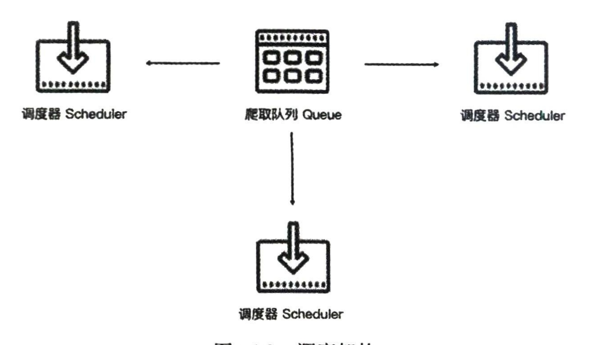
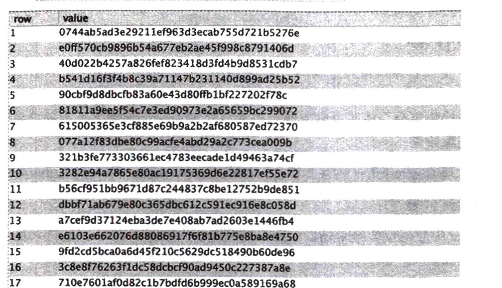
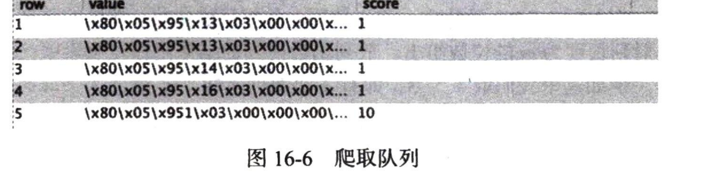
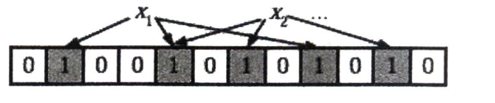
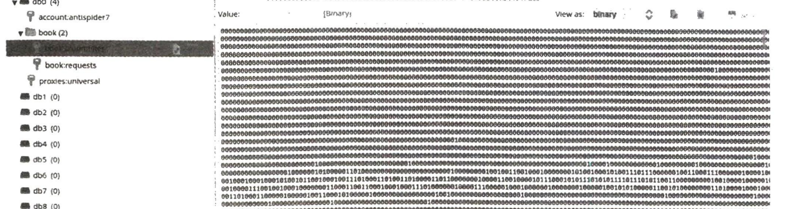

在上一章中,我们了解了 Scrapy 爬虫框架的用法。这些框架都是在同一台主机上运行的,爬取效率比较有限。如果能够用多台主机协同爬取,那么爬取效率必然会成倍增长,这就是分布式爬虫的优势。本章我们就来了解一下分布式爬虫的基本原理,以及Scrapy实现分布式爬虫的流程。
16.1 分布式爬虫理念
我们在前面已经实现了Scrapy爬虫,虽然爬虫是异步加多线程的,但是我们只能在一台主机上运行,所以爬取效率还是有限的。分布式爬虫则是将多台主机组合起来,共同完成一个爬取任务,这将大大提高爬取效率。
1. 分布式爬虫架构
Scrapy 单机爬虫中有一个本地爬取队列Queue,这个队列是利用 deque模块实现的。新的Request生成就会被放到队列里,随后被调度器 Scheduler 调度,交给Downloader 执行爬取,简单的调度架构如图16-1所示。
如果两个 Scheduler 同时从队列里面取 Request,每个Scheduler 都有其对应的Downloader,那么在带宽足够、正常爬取且不考虑队列存取压力的情况下,爬取效率会有什么变化?没错,爬取效率会翻倍。这样,Scheduler 可以扩展多个,Downloader 也可以扩展多个。而爬取队列 Queue 必须始终为一个,也就是所谓的共享爬取队列。这样才能保证 Scheduler 从队列里调度某个Request后,其他Scheduler不会重复调度此 Request,就可以做到多个 Scheduler 同步爬取了。这就是分布式爬虫的基本雏形,简单调度架构如图16-2所示。

我们需要做的就是在多台主机上同时运行爬虫任务协同爬取,而协同爬取的前提就是共享爬取队列。这样各台主机就不需要各自维护爬取队列,从共享爬取队列存取 Request 就行了。但是各台主机还是有各自的 Scheduler 和 Downloader,所以调度和下载功能分别完成。如果不考虑队列存取性能消耗,爬取效率还是会成倍提高。
2. 维护爬取队列
爬取队列怎样维护比较好呢?我们首先需要考虑的就是性能问题,什么数据库存取效率高?我们自然能想到基于内存存储的Redis,而且Redis 支持多种数据结构,例如列表(List)、集合(Set)、有序集合(Sorted Set)等,存取的操作也非常简单,所以在这里我们采用Redis 来维护爬取队列。实际上,这几种数据结构存储各有千秋。
列表数据结构有lpush、lpop、rpush、rpop方法,我们可以用它实现一个先进先出式的爬取队列,也可以实现一个先进后出的栈式爬取队列。
集合的元素是无序且不重复的,这样我们可以非常方便地实现一个随机排序的不重复的爬取队列。
有序集合带有分数表示,而Scrapy的Request 也有优先级的控制,所以用有序集合我们可以实现一个带优先级调度的队列。我们需要根据具体爬虫的需求来灵活选择不同的队列。
3. 去重
Scrapy有自动去重功能,它的去重使用了Python中的集合。这个集合记录了 Scrapy 中每个 Request的指纹,这个指纹实际上就是 Request 的散列值。我们可以看一下 Scrapy 的源代码,如下所示:
import hashlib
def request_fingerprint(request, include_headers=None):
if include_headers:
include_headers = tuple(to_bytes(h.lower())
for h in sorted(include_headers))
cache = _fingerprint_cache.setdefault(request, {})
if include_headers not in cache:
fp = hashlib.sha1()
fp.update(to_bytes(request.method))
fp.update(to_bytes(canonicalize_url(request.url)))
fp.update(request.body or b'')
if include_headers:
for hdr in include_headers:
if hdr in request.headers:
fp.update(hdr)
for v in request.headers.getlist(hdr):
fp.update(v)
cache [include_headers] = fp.hexdigest()
return cache [include_headers]request_fingerprint 就是计算 Request 指纹的方法,其方法内部使用的是hashlib的sha1 方法。计算的字段包括 Request 的Method、URL、Body、Headers这几部分内容,这里只要有一点不同,那么计算的结果就不同。计算得到的结果是加密后的字符串,也就是指纹。每个Request都有独有的指纹,指纹就是一个字符串,判定字符串是否重复比判定 Request 对象是否重复容易得多,所以指纹可以作为判定 Request 是否重复的依据。我们如何判定重复呢?Scrapy是这样实现的:
def __init__(self):
self.fingerprints = set()
def request_seen(self, request):
fp = self.request_fingerprint(request)
if fp in self.fingerprints:
return True
self.fingerprints.add(fp)在去重的类 RFPDupeFilter中,有一个 request_seen 方法,该方法有一个参数 request,它的作用就是检测 Request 对象是否重复。这个方法调用request_fingerprint 获取该 Request 的指纹,检测这个指纹是否存在于 fingerprints 变量中,而 fingerprints 是一个集合,集合的元素都是不重复的。如果指纹存在,就返回 True,说明该 Request 是重复的,否则就将这个指纹加入集合。如果下次还有相同的 Request 传递过来,指纹也是相同的,指纹就已经存在于集合中了,那么Request 对象就会直接判定为重复。这样,去重的目的就实现了。Scrapy 的去重过程就是,利用集合元素的不重复特性来实现 Request 的去重。对于分布式爬虫来说,我们肯定不能再用每个爬虫各自的集合来去重了。因为这样还是每个主机单独维护自己的集合,不能做到共享。多台主机如果生成了相同的Request,只能各自去重,各个主机之间就无法做到去重了。那么要实现去重,这个指纹集合也需要是共享的。Redis正好有集合的存储数据结构,我们可以利用Redis 的集合作为指纹集合,那么这样去重集合也是利用Redis共享的。每台主机新生成 Request后,把该 Request 的指纹与集合比对,如果指纹已经存在,说明该 Request 是重复的,否则将 Request的指纹加入这个集合。利用同样的原理,我们在不同的存储结构中实现了分布式 Request的去重。
4. 防止中断
在Scrapy中,爬虫运行时的Request 队列放在内存中。爬虫运行中断后,这个队列的空间就被释放,此队列就销毁了。所以一旦爬虫运行中断,爬虫再次运行就相当于全新的爬取过程。要做到中断后继续爬取,我们可以将队列中的 Request 保存起来,下次爬取直接读取保存数据即可获取上次爬取的队列。我们在Scrapy 中指定一个爬取队列的存储路径即可,这个路径使用 JOB_DIR变量来标识,可以用如下命令来实现:
scrapy crawl spider -s JOBDIR=crawls/spider更加详细的使用方法可以参见官方文档:https://doc.scrapy.org/en/latest/topics/jobs.html。在Scrapy中,我们实际是把爬取队列保存到本地,第二次爬取直接读取并恢复队列。那么在分布式架构中,我们还用担心这个问题吗?不需要。因为爬取队列本身就是用数据库保存的,如果爬虫中断了,数据库中的Request 依然存在,下次启动就会接着上次中断的地方继续爬取。所以,当Redis 的队列为空时,爬虫会重新爬取;当Redis的队列不为空时,爬虫便会接着上次中断之处继续爬取。
5. 架构实现
我们接下来就需要在程序中实现这个架构了。首先实现一个共享的爬取队列,还要实现去重的功能。另外,重写一个 Scheduler 的实现,使之可以从共享的爬取队列中存取 Request。幸运的是,已经有人实现了这些逻辑和架构,并发布成叫 Scrapy-Redis的Python包。接下来,我们看一下Scrapy-Redis的源码实现,以及它的详细工作原理。
16.2 Scrapy-Redis 原理和源码解析
Scrapy-Redis 库已经为我们提供了Scrapy 分布式的队列、调度器、去重等功能,其 GitHub 地址为:https://github.com/rmax/scrapy-redis。
本节我们深入了解一下,如何利用Redis实现 Scrapy 分布式。
1. 获取源码
可以把源码克隆下来,执行如下命令:
git clone https://github.com/rmax/scrapy-redis.git核心源码在 scrapy-redis/src/scrapy_redis目录下。
2. 爬取队列
从爬取队列入手,看看它的具体实现。源码文件为 queue.py,它有3个队列的实现,首先它实现了一个父类 Base,提供一些基本方法和属性,代码如下所示:
class Base(object):
def __init__(self, server, spider, key, serializer=None):
if serializer is None:
serializer = picklecompat
if not hasattr(serializer, 'loads'):
raise TypeError("serializer does not implement 'loads' function: %r"
% serializer)
if not hasattr(serializer, 'dumps'):
raise TypeError("serializer '%s' does not implement 'dumps' function: %r"
% serializer)
self.server = server
self.spider = spider
self.key = key % {'spider': spider.name}
self.serializer = serializer
def _encode_request(self, request):
obj = request_to_dict(request, self.spider)
return self.serializer.dumps(obj)
def _decode_request(self, encoded_request):
obj = self.serializer.loads(encoded_request)
return request_from_dict(obj, self.spider)
def __len__(self):
raise NotImplementedError
def push(self, request):
raise NotImplementedError
def pop(self, timeout=0):
raise NotImplementedError
def clear(self):
self.server.delete(self.key)首先看一下_encode_request 和_decode_request方法,因为我们需要把一个Request 对象存储到数据库中,但数据库无法直接存储对象,所以需要将 Request 序列化转成字符串再存储,而这两个方法分别是序列化和反序列化的操作,这个过程可以利用 pickle 库来实现。一般在调用 push 方法将Request 存入数据库时,会调用_encode_request 方法进行序列化,在调用 pop 取出 Request 的时候,会调用_decode_request 进行反序列化。在父类中__len__、push 和 pop方法都是未实现的,会直接抛出 NotImplementedError,因此这个类是不能直接被使用的,必须实现一个子类来重写这3个方法,而不同的子类就会有不同的实现,也就有着不同的功能。接下来就需要定义一些子类来继承 Base类,并重写这几个方法,那在源码中就有3个子类的实现,它们分别是FifoQueue、PriorityQueue、LifoQueue,我们分别来看一下它们的实现原理。
首先是 FifoQueue:
class FifoQueue(Base):
def __len__(self):
return self.server.llen(self.key)
def push(self, request):
self.server.lpush(self.key, self._encode_request(request))
def pop(self, timeout=0):
if timeout > 0:
data = self.server.brpop(self.key, timeout)
if isinstance(data, tuple):
data = data[1]
else:
data = self.server.rpop(self.key)
if data:
return self._decode_request(data)可以看到这个类继承了 Base 类,并重写了 __len__、push、pop。在这 3 个方法中,都是对 server对象的操作,而 server 对象就是一个 Redis 连接对象,我们可以直接调用其操作 Redis 的方法对数据库进行操作。可以看到这里的操作方法有 llen、lpush、rpop 等,这就代表此爬取队列使用了 Redis 的列表。序列化后的 Request 会被存入列表,就是列表的其中一个元素; __len__ 方法是获取列表的长度;push 方法中调用了 lpush 操作,这代表从列表左侧存入数据;pop 方法中调用了 rpop 操作,这代表从列表右侧取出数据。
Request 在列表中的存取顺序是左侧进、右侧出,这是有序的进出,即先进先出(first in, first out, FIFO),此类的名称就叫作 FifoQueue。
还有一个与之相反的实现类,叫作 LifoQueue,代码实现如下:
class LifoQueue(Base):
def __len__(self):
return self.server.llen(self.key)
def push(self, request):
self.server.lpush(self.key, self._encode_request(request))
def pop(self, timeout=0):
if timeout > 0:
data = self.server.blpop(self.key, timeout)
if isinstance(data, tuple):
data = data[1]
else:
data = self.server.lpop(self.key)
if data:
return self._decode_request(data)与 FifoQueue 不同的是,它的 pop 方法在这里使用的是 lpop 操作,也就是从左侧出,而 push 方法依然是使用的 lpush 操作,是从左侧入。那么这样达到的效果就是先进后出、后进先出(last in, first out, LIFO),此类名称就叫作 LifoQueue。同时这个存取方式类似栈的操作,所以其实也可以称作StackQueue。
在源码中还有一个子类叫作 PriorityQueue,顾名思义,它是优先级队列,代码实现如下:
class PriorityQueue(Base):
def __len__(self):
return self.server.zcard(self.key)
def push(self, request):
data = self._encode_request(request)
score = -request.priority
self.server.execute_command('ZADD', self.key, score, data)
def pop(self, timeout=0):
pipe = self.server.pipeline()
pipe.multi()
pipe.zrange(self.key, 0, 0).zremrangebyrank(self.key, 0, 0)
results, count = pipe.execute()
if results:
return self._decode_request(results[0])在这里我们可以看到__len__、push、pop方法中使用了 server 对象的 zcard、zadd、zrange 操作,可以知道这里使用的存储结果是有序集合,在这个集合中,每个元素都可以设置一个分数,这个分数就代表优先级。__len__方法调用了zcard操作,返回的就是有序集合的大小,也就是爬取队列的长度。在push方法中调用了 zadd操作,就是向集合中添加元素,这里的分数指定成Request 优先级的相反数,因为分数低的会排在集合的前面,所以这里高优先级的Request 就会存在集合的最前面。pop 方法首先调用了zrange 操作取出了集合的第一个元素,因为最高优先级的Request 会存在集合最前面,所以第一个元素就是最高优先级的Request,然后再调用 zremrangebyrank 操作将这个元素删除,这样就完成了取出并删除的操作。此队列是默认使用的队列,也就是爬取队列默认使用有序集合来存储。
3. 去重过滤
前面说过,Scrapy 的去重是利用集合来实现的,而Scrapy 分布式中的去重需要利用共享的集合,这里使用的是 Redis 中的集合数据结构。我们来看一看去重类是怎样实现的。源码文件是 dupefilter.py,其内实现了一个 RFPDupeFilter 类,代码如下所示:
class RFPDupeFilter (BaseDupeFilter):
logger = logger
def __init__(self, server, key, debug=False):
self.server = server
self.key = key
self.debug = debug
self.logdupes = True@classmethod
def from_settings(cls, settings):
server = get_redis_from_settings(settings)
key = defaults.DUPEFILTER_KEY % {'timestamp': int(time.time())}
debug = settings.getbool("DUPEFILTER_DEBUG")
return cls(server, key=key, debug=debug)@classmethod
def from_crawler (cls, crawler):
return cls.from_settings(crawler.settings)
def request_seen(self, request):
fp = self.request_fingerprint(request)
added = self.server.sadd(self.key, fp)
return added == 0
def request_fingerprint(self, request):
return request_fingerprint(request)
def close(self, reason=''):
self.clear()
def clear(self):
self.server.delete(self.key)def log(self, request, spider):
if self.debug:
msg = "Filtered duplicate request: %(request)s"
self.logger.debug(msg, {'request': request}, extra={'spider': spider})
elif self.logdupes:
msg = ("Filtered duplicate request %(request)s""- no more duplicates will be shown""(see DUPEFILTER_DEBUG to show all duplicates)")
self.logger.debug(msg, {'request': request}, extra={'spider': spider})
self.logdupes = False这里同样实现了一个 request_seen 方法,与 Scrapy 中的 request_seen 方法实现极其类似。不过这里集合使用的是 server 对象的 sadd 操作,也就是集合不再是一个简单数据结构了,而是直接换成了数据库的存储方式。
鉴别重复的方式还是使用指纹,指纹同样是依靠 request_fingerprint 方法来获取的。获取指纹之后直接向集合添加指纹,如果添加成功,说明这个指纹原本不存在于集合中,返回值为 1。代码最后的返回结果是判定添加结果是否为 0,如果刚才的返回值为 1,那么这个判定结果就是 False,也就是不重复,否则判定为重复。
这样我们就成功利用 Redis 的集合完成了指纹的记录和重复的验证。
4. 调度器
Scrapy-Redis 还帮我们实现了配合 Queue、DupeFilter 使用的调度器 Scheduler,源文件名称是scheduler.py。我们可以指定一些配置,如 SCHEDULER_FLUSH_ON_START 即是否在爬取开始的时候清空爬取队列,SCHEDULER_PERSIST 即是否在爬取结束后保持爬取队列不清除。我们可以在 settings.py 里自由配置,而此调度器很好地实现了对接。
接下来我们看两个核心的存取方法,代码如下所示:
def enqueue_request(self, request):
if not request.dont_filter and self.df.request_seen(request):
self.df.log(request, self.spider)
return False
if self.stats:
self.stats.inc_value('scheduler/enqueued/redis', spider=self.spider)
self.queue.push(request)
return Truedef next_request(self):
block_pop_timeout = self.idle_before_close
request = self.queue.pop(block_pop_timeout)
if request and self.stats:
self.stats.inc_value('scheduler/dequeued/redis', spider=self.spider)
return requestenqueue_request 可以向队列中添加 Request,核心操作就是调用 Queue 的 push 操作,还有一些统计和日志操作。next_request 就是从队列中取 Request,核心操作就是调用 Queue 的 pop 操作,此时如果队列中还有 Request,则 Request 会直接取出来,爬取继续;如果队列为空,则爬取会重新开始。
5. 总结
目前,我们把之前说的 3 个分布式的问题解决了,总结如下。
爬取队列的实现:这里提供了 3 种队列,使用 Redis 的列表或有序集合来维护。
去重的实现:这里使用 Redis 的集合来保存 Request 指纹,以提供重复过滤。
中断后重新爬取的实现:中断后 Redis 的队列没有清空,再次启动时调度器的 next_request 会从队列中取到下一个 Request,继续爬取。
16.3 基于 Scrapy-Redis 的分布式爬虫实现
REDIS_URL = 'redis://192.168.2.3:6379'第二种配置方式是分项单独配置。这个配置就更加直观了,如根据我的 Redis 连接信息,可以在settings.py 中配置如下代码:
REDIS_HOST = '192.168.2.3'
REDIS_PORT = 6379
REDIS_PASSWORD = None这段代码分开配置了 Redis 的地址、端口和密码,密码为空。注意,如果配置了 REDIS_URL,那么 Scrapy-Redis 将优先使用 REDIS_URL 连接,会覆盖上面的3项配置。如果想要分项单独配置,请不要配置 REDIS_URL。在本项目中,我们选择的是配置 REDIS_URL。
配置调度队列
此项配置是可选的,默认使用 PriorityQueue。如果想要更改配置,可以配置 SCHEDULER_QUEUE_CLASS变量,如下所示:
SCHEDULER_QUEUE_CLASS = 'scrapy_redis.queue.PriorityQueue'
SCHEDULER_QUEUE_CLASS = 'scrapy_redis.queue.FifoQueue'
SCHEDULER_QUEUE_CLASS = 'scrapy_redis.queue.LifoQueue'以上3行任选其一配置,即可切换爬取队列的存储方式。在本项目中不进行任何配置,我们使用默认配置,即 PriorityQueue。
配置持久化
此配置是可选的,默认是 False。Scrapy-Redis 默认会在爬取全部完成后清空爬取队列和去重指纹集合。如果不想自动清空爬取队列和去重指纹集合,可以增加如下配置:
SCHEDULER_PERSIST = True将 SCHEDULER_PERSIST 设置为 True 之后,爬取队列和去重指纹集合不会在爬取完成后自动清空,如果不配置,默认是 False,即自动清空。值得注意的是,如果强制中断爬虫的运行,爬取队列和去重指纹集合是不会自动清空的。在本项目中不进行任何配置,我们使用默认配置。
配置重爬
此配置是可选的,默认是 False。如果配置了持久化或者强制中断了爬虫,那么爬取队列和指纹集合不会被清空,爬虫重新启动之后就会接着上次爬取。如果想重新爬取,我们可以配置重爬的选项:
SCHEDULER_FLUSH_ON_START = True这样将 SCHEDULER_FLUSH_ON_START 设置为 True 之后,爬虫每次启动时,爬取队列和指纹集合都会清空。所以要做分布式爬取,我们必须保证只能清空一次,否则每个爬虫任务在启动时都清空一次,就会把之前的爬取队列清空,势必会影响分布式爬取。注意,此配置在单机爬取的时候比较方便,分布式爬取不常用此配置。在本项目中不进行任何配置,我们使用默认配置。
Pipeline 配置
此配置是可选的,默认不启动 Pipeline。Scrapy-Redis 实现了一个存储到 Redis 的 Item Pipeline,
如果启用了这个 Pipeline,爬虫会把生成的 Item 存储到 Redis 数据库中。在数据量比较大的情况下,我们一般不会这么做。因为Redis 是基于内存的,我们利用的是它处理速度快的特性,用它来做存储未免太浪费了,配置如下:
ITEM_PIPELINES = {'scrapy_redis.pipelines.RedisPipeline': 300}本项目不进行任何配置,即不启动 Pipeline。到此为止,Scrapy-Redis 的配置就完成了。有的选项我们没有配置,但是这些配置在其他 Scrapy 项目中可能会用到,要根据具体情况而定。
5. 配置代理池和账号池
在middlewares.py中,我们需要修改代理池和账号池的请求地址,之前我们使用的是localhost,但这里我们需要统一修改为上文提到的A主机的地址。在 ProxyMiddleware 修改 proxypool_url 内容如下:
proxypool_url = 'http://192.168.2.3:5555/random'在 AuthorizationMiddleware 修改 accountpool_url 内容如下:
accountpool_url = 'http://192.168.2.3:6777/antispider7/random'6. 运行
以上修改需要同时在A、B、C三台主机上执行,三台主机上的代码是完全一样的。修改完毕后,我们便完成了分布式爬虫的配置了,这样三台主机就共享了同一个 Redis 爬取队列,同时共享了一个代理池和账号池,共同完成协同爬取。接下来我们就可以运行一下实现分布式爬取了,在每台主机上都执行如下命令:
scrapy crawl book主机的运行顺序不分先后,每台主机启动了此命令后,就会从配置的A主机的Redis 数据库中调度 Request 并利用 Request 的指纹集合进行去重过滤。同时每台主机占用各自的带宽和处理器,不会互相影响,爬取效率成倍提高。每台主机运行过程中的输出结果类似这样:
2021-01-03 02:57:56 [middlewares.authorization] DEBUG: set authorization jwteyJ0eXAi0iJKV1QiLCJhbGciOiJIUzI1NiJ9.eyJ1c2VyX2lkIjo4NywidXNlcm5hbWUiOiJhZG1pbjc0IiwiZXhwIjoxNjA5NzE0NjMw：LCJ1bWFpbCI6IiIsIm9yaWdfaWFOIjoxNjA5NjcxNDMwfQ.d4UaiT1TBPBXd4coFSdaIuweztzCc1f7fV79XBI05KM
2021-01-03 02:57:56 [middlewares.proxy] DEBUG: set proxy 149.28.218.108:3128
2021-01-03 02:57:56 [scrapy.core.scraper] DEBUG: Scraped from <200
https://antispider7.scrape.center/api/book/1001885/>值得注意的是,第一个启动的Spider 会检测到爬取队列为空,这时候就会调用 start_requests 方法生成初始 Request,后续启动的Spider 如果检测到爬取队列不为空,就会直接从当前爬取队列中获取 Request 进行爬取。这样,只有第一个Spider的 start_requests方法会被调用,其他Spider 在队列不为空的情况下是不会调用 start_requests方法的,于是保证了多个Spider的协同爬取。
7. 结果
一段时间后,我们可以用RedisDesktop 观察 Redis 数据库的信息。这里会出现两个Key:一个叫作 book: dupefilter,用来储存指纹;另一个叫作book: requests,即爬取队列,如图16-5 和图 16-6所示。
16.4 基于 Bloom Filter 进行大规模去重
SET: book:dupefilter Size: 17 TTL: -1row value 1 0744ab5ad3e29211ef963d3ecab755d721b5276e 2 e0ff570cb9896b54a677eb2ae45f998c8791406d 3 40d022b4257a826fef823418d3fd4b9d8531cdb7 4 b541d16f3f4b8c39a71147b231140d899ad25b52 5 90cbf9d8dbcfb83a60e43d80ffb1bf227202f78c 6 81811a9ee5f54c7e3ed90973e2a65659bc299072 7 615005365e3cf885e69b9a2b2af680587ed72370 8 077a12f83dbe80c99acfe4abd29a2c773cea009b 9 321b3fe773303661ec4783eecade1d49463a74cf 10 3282e94a7865e80ac19175369d6e22817ef55e72 11 b56cf951bb9671d87c244837c8be12752b9de851 12 dbbf71ab679e80c365dbc612c591ec916e8c058d 13 a7cef9d3124eba3de7e408ab7ad2603e1446fb4 14 e6103e662076d88086917f6f81b775e8ba8e4750 15 9fd2cd5bca0a6d45f210c5629dc518490b60de96 16 3c8e8f76263f1dc58dcbcf90ad9450c227387a8e 17 710e7601af0d82c1b7bdfd6b999ec0a589169a68

ZSET: book:requests Size: 5 TTL: -1row value score 1 \x80\x05\x95\x13\x00\x00\x00\x... 1 2 \x80\x05\x95\x13\x00\x00\x00\x... 1 3 \x80\x05\x9 \x95\x14\x00\x00\x00\x... 1 4 \x80\x05\x9 \x95\x16\x00\x00\x00\x... 1 5 \x80\x05\x9 \x951\x00\x00\x00\x00\... 10

随着时间的推移,指纹集合会不断增长,爬取队列会动态变化。另外值得注意的是,在爬取的过程中,去重指纹集合是不断增长的,如果中途想要中断所有的Spider 重新进行爬取,需要先停止所有Spider,然后手动从 Redis 中删除指纹集合和爬取队列,再重新运行。至此,Scrapy 分布式的配置已全部完成,通过简单的配置,我们就完成了多主机多 Spider 的协同爬取。
8. 总结
本节通过对接 Scrapy-Redis 成功实现了分布式爬虫,实现了多机协同爬取。本节代码所在的地址为 https://github.com/Python3WebSpider/ScrapyCompositeDemo/tree/scrapy-redis,注意这里是 scrapy-redis 分支而不是默认分支。
首先回顾一下 Scrapy-Redis 的去重机制。Scrapy-Redis 将 Request 的指纹存储到了 Redis 集合中,每个指纹的长度为40,例如27adcc2e8979cdee0c9cecbbe8bf8ff51edefb61就是一个指纹,是一个字符串。我们计算一下用这种方式耗费的存储空间。每个字符占用1字节,即1B,1个指纹占用空间为40 B,1万个指纹占用空间约400KB,1亿个指纹占用空间约4GB。当爬取数量达到上亿级别时,Redis的占用的内存就会变得很大,而且这仅仅是指纹的存储。Redis还存储了爬取队列,内存占用会进一步提高，更别说多个 Scrapy 项目同时爬取的情况了。当爬取达到亿级规模时，Scrapy-Redis 提供的集合去重已经不能满足我们的要求了。所以我们需要使用一个更加节省内存的去重算法——Bloom Filter。
1. 了解 Bloom Filter
Bloom Filter，中文名称是布隆过滤器，它在 1970 年由 Bloom 提出，可以被用来检测一个元素是否在一个集合中。Bloom Filter 的空间利用率很高，使用它可以大大节省存储空间。Bloom Filter 使用位数组表示一个待检测集合，并可以快速通过概率算法判断一个元素是否在这个集合中。利用这个算法我们可以实现去重效果。本节我们来了解 Bloom Filter 的基本算法，以及 Scrapy-Redis 中对接 Bloom Filter 的方法。
2. Bloom Filter 的算法
在 Bloom Filter 中使用位数组来辅助实现检测判断。在初始状态下，我们声明一个包含 m 位的位数组，它的所有位都是 0，如图 16-7 所示。
现在我们有了一个待检测集合，表示为 S={x₁, x₂,…, xₙ}，接下来需要做的就是检测一个 x 是否已经存在于集合 S 中。在 Bloom Filter 算法中，首先使用 k 个相互独立的、随机的散列函数来将这个集合S 中的每个元素映射到长度为 m 的位数组上，散列函数得到的结果记作位置索引，然后将位数组该位置的索引设置为 1。例如这里我们取 k 为 3，即有 3 个散列函数，x₁ 经过 3 个散列函数映射得到的结果分别为 1、4、8，x₂ 经过 3 个散列函数映射得到的结果分别为 4、6、10，那么就会将位数组的 1、4、6、8、10 这 5 个位置设置为 1，如图 16-8 所示。

这时如果再有一个新的元素 x，我们要判断它是否属于 S 集合，便会将仍然用 k 个散列函数对 x 求映射结果，如果所有结果对应的位数组位置均为 1，那么就认为 x 属于 S 集合，否则 x 不属于 S 集合。例如一个新元素 x 经过 3 个散列函数映射的结果为 4、6、8，对应的位置均为 1，则判断 x 属于 S集合。如果结果为 4、6、7，其中 7 对应的位置为 0，则判定 x 不属于 S 集合。注意这里 m、n、k 的关系满足 m>kn，也就是说位数组的长度 m 要比集合元素个数 n 和散列函数k 的乘积还要大。这样的判定方法很高x效，但是也是有代价的，它可能把不属于这个集合的元素误认为属于这个集合，我们来估计一下它的错误率。当集合 S={x₁, x₂,…, xₙ} 的所有元素都被 k 个散列函数映射到 m 位的位数组中时，这个位数组中某一位还是 0 的概率是：
(1-(1-1/m)^k)^n
因为散列函数是随机的，所以任意一个散列函数选中这一位的概率为 1/m，那么 1-1/m 就代表散列函数一次没有选中这一位的概率，要把 S 完全映射到 m 位的位数组中，需要做 kn 次散列运算，所以最后的概率就是 1-1/m 的 kn 次方。一个不属于 S 的元素 x 如果要被误判定为在 S 中，那么这个概率就是 k 次散列运算得到的结果对应的位数组位置都为 1，所以误判概率为:
根据:
可以将误判概率转化为:
在给定 m、n 时，可以求出使得最小的 k 值为:
也就是说，当 k 约等于 m 与 n 比值的 0.7 倍时，使得误判概率最小，这里将误判概率归纳为表16-1。
表16-1 误判概率表
| m/n | 最优k | k=1 | k=2 | k=3 | k=4 | k=5 | k=6 | k=7 | k=8 |
|---|---|---|---|---|---|---|---|---|---|
| 2 | 1.39 | 0.393 | 0.400 | ||||||
| 3 | 2.08 | 0.283 | 0.237 | 0.253 | |||||
| 4 | 2.77 | 0.221 | 0.155 | 0.147 | 0.160 | ||||
| 5 | 3.46 | 0.181 | 0.109 | 0.092 | 0.092 | 0.101 | |||
| 6 | 4.16 | 0.154 | 0.0804 | 0.0609 | 0.0561 | 0.0578 | 0.0638 | ||
| 7 | 4.85 | 0.133 | 0.0618 | 0.0423 | 0.0359 | 0.0347 | 0.0364 | ||
| 8 | 5.55 | 0.118 | 0.0489 | 0.0306 | 0.024 | 0.0217 | 0.0216 | 0.0229 | |
| 9 | 6.24 | 0.105 | 0.0397 | 0.0228 | 0.0166 | 0.0141 | 0.0133 | 0.0135 | 0.0145 |
| 10 | 6.93 | 0.0952 | 0.0329 | 0.0174 | 0.0118 | 0.00943 | 0.00844 | 0.00819 | 0.00846 |
| 11 | 7.62 | 0.0869 | 0.0276 | 0.0136 | 0.00864 | 0.0065 | 0.00552 | 0.00513 | 0.00509 |
| 12 | 8.32 | 0.08 | 0.0236 | 0.0108 | 0.00646 | 0.00459 | 0.00371 | 0.00329 | 0.00314 |
| 13 | 9.01 | 0.074 | 0.0203 | 0.00875 | 0.00492 | 0.00332 | 0.00255 | 0.00217 | 0.00199 |
| 14 | 9.7 | 0.0689 | 0.0177 | 0.00718 | 0.00381 | 0.00244 | 0.00179 | 0.00146 | 0.00129 |
| 15 | 10.4 | 0.0645 | 0.0156 | 0.00596 | 0.003 | 0.00183 | 0.00128 | 0.001 | 0.000852 |
| 16 | 11.1 | 0.0606 | 0.0138 | 0.005 | 0.00239 | 0.00139 | 0.000935 | 0.000702 | 0.000574 |
| 17 | 11.8 | 0.0571 | 0.0123 | 0.00423 | 0.00193 | 0.00107 | 0.000692 | 0.000499 | 0.000394 |
| 18 | 12.5 | 0.054 | 0.0111 | 0.00362 | 0.00158 | 0.000839 | 0.000519 | 0.00036 | 0.000275 |
| 19 | 13.2 | 0.0513 | 0.00998 | 0.00312 | 0.0013 | 0.000663 | 0.000394 | 0.000264 | 0.000194 |
| 20 | 13.9 | 0.0488 | 0.00906 | 0.0027 | 0.00108 | 0.00053 | 0.000303 | 0.000196 | 0.00014 |
| 21 | 14.6 | 0.0465 | 0.00825 | 0.00236 | 0.000905 | 0.000427 | 0.000236 | 0.000147 | 0.000101 |
| 22 | 15.2 | 0.0444 | 0.00755 | 0.00207 | 0.000764 | 0.000347 | 0.000185 | 0.000112 | 7.46e-05 |
表16-1 误判概率表（续）
| m/n | 最优k | k=1 | k=2 | k=3 | k=4 | k=5 | k=6 | k=7 | k=8 |
|---|---|---|---|---|---|---|---|---|---|
| 23 | 15.9 | 0.0425 | 0.00694 | 0.00183 | 0.000649 | 0.000285 | 0.000147 | 8.56e-05 | 5.55e-05 |
| 24 | 16.6 | 0.0408 | 0.00639 | 0.00162 | 0.000555 | 0.000235 | 0.000117 | 6.63e-05 | 4.17e-05 |
| 25 | 17.3 | 0.0392 | 0.00591 | 0.00145 | 0.000478 | 0.000196 | 9.44e-05 | 5.18e-05 | 3.16e-05 |
| 26 | 18 | 0.0377 | 0.00548 | 0.00129 | 0.000413 | 0.000164 | 7.66e-05 | 4.08e-05 | 2.42e-05 |
| 27 | 18.7 | 0.0364 | 0.0051 | 0.00116 | 0.000359 | 0.000138 | 6.26e-05 | 3.24e-05 | 1.87e-05 |
| 28 | 19.4 | 0.0351 | 0.00475 | 0.00105 | 0.000314 | 0.000117 | 5.15e-05 | 2.59e-05 | 1.46e-05 |
| 29 | 20.1 | 0.0339 | 0.00444 | 0.000949 | 0.000276 | 9.96e-05 | 4.26e-05 | 2.09e-05 | 1.14e-05 |
| 30 | 20.8 | 0.0328 | 0.00416 | 0.000862 | 0.000243 | 8.53e-05 | 3.55e-05 | 1.69e-05 | 9.01e-06 |
| 31 | 21.5 | 0.0317 | 0.0039 | 0.000785 | 0.000215 | 7.33e-05 | 2.97e-05 | 1.38e-05 | 7.16e-06 |
| 32 | 22.2 | 0.0308 | 0.00367 | 0.000717 | 0.000191 | 6.33e-05 | 2.5e-05 | 1.13e-05 | 5.73e-06 |
可以看到，当 k 值确定时，随着 m/n 的增大，误判概率逐渐变小。当 m/n 的值确定时，k 越靠近最优 k 值，误判概率越小。另外误判概率总体来看都是极小的，在容忍此误判概率的情况下，大幅减小存储空间和判定速度是完全值得的。接下来我们就将 Bloom Filter 算法应用到 Scrapy-Redis 分布式爬虫的去重过程中，以解决 Redis 内存不足的问题。
3. 对接 Scrapy-Redis
实现 Bloom Filter 时，我们首先要保证不能破坏 Scrapy-Redis 分布式爬取的运行架构，所以我们需要修改 Scrapy-Redis 的源码，替换它的去重类。同时 Bloom Filter 的实现需要借助一个位数组，既然当前架构还是依赖于 Redis 的，位数组的维护直接使用 Redis 就好了。首先我们实现一个基本的散列算法，可以将一个值经过散列运算后映射到一个 m 位位数组的某一位上，代码实现如下:
class HashMap(object):
def __init__(self, m, seed):
self.m = m
self.seed = seed
def hash(self, value):
ret = 0
for i in range(len(value)):
ret += self.seed * ret + ord(value[i])
return (self.m - 1) & ret在这里新建了一个 HashMap 类，构造函数传入两个值，一个是 m 位数组的位数，另一个是种子值seed，不同的散列函数需要有不同的 seed，这样可以保证不同散列函数的结果不会碰撞。在 hash 方法的实现中，value 是要被处理的内容，在这里我们遍历了该字符的每一位并利用 ord 方法取到了它的 ASCII 码，然后混淆 seed 进行迭代求和运算，最终会得到一个数值。这个数值的结果由 value 和 seed 唯一确定，然后我们再将它和 m 进行按位与运算，即可获取 m 位位数组的映射结果，这样我们就实现了一个由字符串和 seed 来确定的散列函数。当 m 固定时，只要 seed 值相同，就代表是同一个散列函数，相同的 value 必然会映射到相同的位置。所以如果我们想要构造几个不同的散列函数，只需要改变其 seed 就好了，以上便是一个简易的散列函数的实现。接下来我们再实现 Bloom Filter，Bloom Filter 里面需要用到 k 个散列函数，所以在这里我们需要对这几个散列函数指定相同的 m 值和不同的 seed 值，在这里构造如下:
BLOOMFILTER_HASH_NUMBER = 6
BLOOMFILTER_BIT = 30
class BloomFilter(object):
def __init__(self, server, key, bit=BLOOMFILTER_BIT, hash_number=BLOOMFILTER_HASH_NUMBER):
# default to 1 << 30 = 10,7374,1824 = 2^30 = 128MB, max filter 2^30/hash_number = 1,7895,6970 fingerprints
self.m = 1 << bit
self.seeds = range(hash_number)
self.maps = [HashMap(self.m, seed) for seed in self.seeds]
self.server = server
self.key = key由于我们需要完成亿级别数据的去重，即前文介绍的算法中 n 为 1 亿以上，散列函数的个数 k 大约取 10 左右的量级，而 m>kn，所以这里 m 保底在 10 亿左右。由于这个数值比较大，所以这里用移位操作来实现，传入位数 bit，将其定义为 30，然后做一个移位操作 1 << 30，相当于 2 的 30 次方，等于 1073741824，量级恰好在 10 亿左右。由于是位数组，所以这个位数组占用的大小就是 230 bit=128 MB，而本文开头我们计算过，Scrapy-Redis 集合去重的占用空间大约在 4G 左右，可见 Bloom Filter 的空间利用效率之高。
随后我们再传入散列函数的个数，用它来生成几个不同的 seed，用不同的 seed 来定义不同的散列函数，这样我们就可以构造一个散列函数列表，遍历 seed，构造带有不同 seed 值的 HashMap 对象，保存成变量 maps 供后续使用。
另外，server 就是 Redis 连接对象，key 就是这个 m 位位数组的名称。接下来我们就要实现比较关键的两个方法了，一个是判定元素是否重复的方法 exists，另一个是添加元素到集合中的方法 insert，代码实现如下:
def exists(self, value):
if not value:
return False
exist = 1
for map in self.maps:
offset = map.hash(value)
exist = exist & self.server.getbit(self.key, offset)
return exist
def insert(self, value):
for f in self.maps:
offset = f.hash(value)
self.server.setbit(self.key, offset, 1)首先我们先来介绍 insert 方法，Bloom Filter 算法会逐个调用散列函数，对放入集合中的元素进行运算，得到在 m 位位数组中的映射位置，然后将位数组对应的位置置 1，所以这里在代码中我们遍历了初始化好的散列函数，然后调用其 hash 方法算出映射位置 offset，再利用 Redis 的 setbit 方法将该位置置 1。
在 exists 方法中，我们就需要实现判定是否重复的逻辑了。方法参数 value 为待判断的元素，在这里我们首先定义了一个变量 exist，然后遍历所有散列函数对 value 进行散列运算，得到映射位置，接着我们用 getbit 方法取得该映射位置的结果，依次进行与运算。这样，只有 getbit 得到的结果都为 1 时，最后的 exist 才为 True，表示 value 属于这个集合。其中只要有一次 getbit 得到的结果为 0，即 m 位位数组中有对应的 0 位，最终的结果 exist 就为 False，代表 value 不属于这个集合。这样，此方法最后的返回结果就是判定重复与否的结果了。
到现在为止 Bloom Filter 的实现已经完成，我们可以用一个实例来测试一下，代码如下:
conn = StrictRedis(host='localhost', port=6379, password='foobared')
bf = BloomFilter(conn, 'testbf', 5, 6)
bf.insert('Hello')bf.insert('World')
result = bf.exists('Hello')
print(bool(result))
result = bf.exists('Python')
print(bool(result))在这里我们首先定义了一个 Redis 连接对象，然后传递给 BloomFilter，为了避免内存占用过大，这里传的位数比较小，设置为 5，散列函数的个数设置为 6。首先我们调用 insert 方法插入了 Hello 和 World 两个字符串，随后判断了一下 Hello 和 Python这两个字符串是否存在，最后输出它的结果，运行结果如下:
True
False很明显，结果完全没有问题，这样我们就借助于 Redis 成功实现了 Bloom Filter 算法。下面我们需要继续修改 Scrapy-Redis 的源码，将它的去重逻辑替换为 Bloom Filter 的逻辑，在这里主要是修改 RFPDupeFilter 类的 request_seen 方法，实现如下:
def request_seen(self, request):
fp = self.request_fingerprint(request)
if self.bf.exists(fp):
return True
self.bf.insert(fp)
return False首先还是利用 request_fingerprint 方法获取 Request 的指纹，然后调用 Bloom Filter 的 exists 方法判定该指纹是否存在。如果存在，证明该 Request 是重复的，返回 True；否则调用 Bloom Filter 的insert 方法将该指纹添加并返回 False。这样就成功利用 Bloom Filter 替换了 Scrapy-Redis 的集合去重。对于 Bloom Filter 的初始化定义，我们可以将 __init__ 方法修改为如下内容:
def __init__(self, server, key, debug, bit, hash_number):
self.server = server
self.key = key
self.debug = debug
self.bit = bit
self.hash_number = hash_number
self.logdupes = True
self.bf = BloomFilter(server, self.key, bit, hash_number)其中 bit 和 hash_number 需要使用 from_settings 方法传递，修改如下:
@classmethod
def from_settings(cls, settings):
server = get_redis_from_settings(settings)
key = defaults.DUPEFILTER_KEY % {'timestamp': int(time.time())}
debug = settings.getbool("DUPEFILTER_DEBUG", DUPEFILTER_DEBUG)
bit = settings.getint('BLOOMFILTER_BIT', BLOOMFILTER_BIT)
hash_number = settings.getint('BLOOMFILTER_HASH_NUMBER', BLOOMFILTER_HASH_NUMBER)
return cls(server, key=key, debug=debug, bit=bit, hash_number=hash_number)其中常量 DUPEFILTER_DEBUG 和 BLOOMFILTER_BIT 统一定义在 defaults.py 中，默认如下:
BLOOMFILTER_HASH_NUMBER = 6
BLOOMFILTER_BIT = 30到此为止，我们就成功实现了 Bloom Filter 和 Scrapy-Redis 的对接。
4. 使用
为了方便使用，本节的代码我已经打包成了一个 Python 包并发布到了 PyPi，链接为 https://pypi.python.org/pypi/scrapy-redis-bloomfilter。大家以后如果想基于 Scrapy-Redis 对接 Bloom Filter，直接使用 scrapy-redis-bloomfilter 包就好了，
不需要再自己实现一遍。可以直接使用 pip3 来安装，命令如下:
pip3 install scrapy-redis-bloomfilter使用的方法和 Scrapy-Redis 基本相似，在 Scrapy-Redis 的基础上，接入 Bloom Filter 需要修改如下几个配置:
# 去重类，要使用 BloomFilter 请替换 DUPEFILTER_CLASS
DUPEFILTER_CLASS = "scrapy_redis_bloomfilter.dupefilter.RFPDupeFilter"
# 散列函数的个数，默认为 6，可以自行修改
BLOOMFILTER_HASH_NUMBER = 6
# BloomFilter 的 bit 参数，默认 30，占用 128 MB 空间，去重数量级 1 亿
BLOOMFILTER_BIT = 30这里进行一下说明。DUPEFILTER_CLASS:去重类，如果要使用 Bloom Filter，需要将 DUPEFILTER_CLASS 修改为该包的去重类。BLOOMFILTER_HASH_NUMBER: Bloom Filter 使用的散列函数的个数，默认为 6，可以根据去重量级自行修改。BLOOMFILTER_BIT:前文所介绍的 BloomFilter 类的 bit 参数，它决定了位数组的位数，如果BLOOMFILTER_BIT 为 30，那么位数组位数为 2 的 30 次方，将占用 Redis 128 MB 的存储空间，去重量级在 1 亿左右，即对应爬取量级 1 亿左右。如果爬取量级在 10 亿、20 亿甚至 100 亿，请将此参数调高。
5. 测试
在源代码中，附有一个测试项目，放在 tests 文件夹下，该项目使用了 scrapy-redis-bloomfilter 包来去重，Spider 的实现如下:
from scrapy import Request, Spider
class TestSpider(Spider):
name = 'test'
base_url = 'https://www.baidu.com/s?wd='
def start_requests(self):
# 先发起 10 次请求
for i in range(10):
url = self.base_url + str(i)
yield Request(url, callback=self.parse)
# 再发起包含上述请求的重复请求
for i in range(100):
url = self.base_url + str(i)
yield Request(url, callback=self.parse)
def parse(self, response):
self.logger.debug('Response of ' + response.url)其中，start_requests 方法先循环了 10 次，构造了参数为 0~9 的 URL，然后重新循环了 100 次，构造了参数为 0~99 的 URL，那么这里就会包含 10 个重复的 Request。这样，后发起的 100 次请求的前 10次请求就会被过滤掉，实现请求去重。要运行测试代码，可以先把 Scrapy-Redis-BloomFilter 包的源码下载下来，命令如下:
git clone https://github.com/Python3WebSpider/ScrapyRedisBloomFilter.git然后进入 tests 文件夹，运行测试项目测试一下:
scrapy crawl test可以看到最后的输出结果如下:
{'bloomfilter/filtered': 10,
'downloader/request_bytes': 34021,
'downloader/request_count': 100,
'downloader/request_method_count/GET': 100,
'downloader/response_bytes': 72943,
'downloader/response_count': 100,
'downloader/response_status_count/200': 100,
'finish_reason': 'finished',
'finish_time': datetime.datetime(2020, 8, 11, 9, 34, 30, 419597),
'log_count/DEBUG': 202,
'log_count/INFO': 7,
'memusage/max': 54153216,
'memusage/startup': 54153216,
'response_received_count': 100,
'scheduler/dequeued/redis': 100,
'scheduler/enqueued/redis': 100,
'start_time': datetime.datetime(2020, 8, 11, 9, 34, 26, 495018)}可以看到最后统计的第一行的结果:
'bloomfilter/filtered': 10,这就是 Bloom Filter 过滤后的统计结果，可以看到它的过滤个数为 10，也就是说，它成功将重复的 10 个 Request 识别出来了，测试通过。
6. 案例集成
对于上一节 Scrapy-Redis 分布式的实现，如果我们需要集成 Bloom Filter，使用上述的 scrapy-redis-bloomfilter 包即可轻松实现。再上一节代码的基础上，我们在 A、B、C 三台主机上分别安装 scrapy-redis-bloomfilter，命令如下:
pip3 install scrapy-redis-bloomfilter然后增加如下配置:
DUPEFILTER_CLASS = "scrapy_redis_bloomfilter.dupefilter.RFPDupeFilter"
BLOOMFILTER_BIT = 20这里我们修改了 SCHEDULER 和 DUPEFILTER_CLASS，使得项目既可以使用 Scrapy-Redis 原有的爬取队列，又可以依赖 Bloom Filter 进行去重，另外我们根据爬取量级预估了 BLOOMFILTER_BIT 为 20，其他的保持默认值即可。修改之后重新运行爬虫:
scrapy crawl book这时候运行效果和之前是一样的，不过背后的去重逻辑已经修改为了 Bloom Filter，这时候我们可以使用 Redis Desktop Manager 来查看当前 Bloom Filter 的 Key 在 Redis 中对应的结果，如图16-9所示。

我们可以发现,有一个叫作book: bloomfilter 的 Key出现了,点击该 Key 并切换到 Binary 查看模式,可以看到其真实值,它是一个非常长的二进制串。由于一开始所有的位都被初始化为0了,所以绝大部分位是0;在爬虫运行的过程中,部分位经过计算并设置为1,所以可以看到部分位的结果为1,随着爬取的进行,被置为1的位数也会越来越多。
7. 总结
以上便是 Bloom Filter 的原理及对接实现,使用Bloom Filter 可以大大节省 Redis 内存,在数据量大的情况下推荐使用此方案。本节代码参见:https://github.com/Python3WebSpider/ScrapyCompositeDemo/tree/scrapy-redis-bloomfilter,注意是 scrapy-redis-bloomfilter 分支。
16.5 基于 RabbitMQ 的分布式爬虫
前面我们了解了Scrapy 如何利用Redis实现分布式爬虫,可以注意到,当爬取数量过大时,Redis占用的内存非常大,因此对于数据去重,我们使用了 Bloom Filter 来进行优化,大幅减少了 Redis的内存占用。
不过,现在我们似乎依然面临一个问题,爬取队列仍旧是基于Redis实现的,那它同样会占据非常大的内存呀!其实在一般情况下,Redis 作为分布式爬取队列是完全够用的。但在数据量比较大,比如爬取上亿级别数据时,Redis 消耗的内存也是比较大的,这时候我们可以考虑将爬取队列进行迁移。
迁移到哪里呢?仔细想想,爬取队列类似一个消息队列,可以先进先出、先进后出、按优先级进出等,只要能满足类似的需求就可以。现如今,消息队列中间件也有很多,如RabbitMQ、RocketMQ等,它们都可以用来做爬取队列的实现。
本节我们就选取目前比较流行的RabbitMQ 来实现一下Scrapy 分布式爬虫吧!
1. 准备工作
在本书4.8节中,我们已经初步了解了 RabbitMQ 的基本原理和使用方法,如果你还不了解RabbitMQ 是什么,建议先回看一下前面的基本内容。在本节开始之前,请确保已经正确安装好了 RabbitMQ 和Python的 pika 库,具体的安装说明可以参考本书4.8节。
2. 对接 Scrapy
RabbitMQ 就是一个消息队列,那它怎么对接 Scrapy 实现分布式爬取呢?通过 Scrapy-Redis 的源码,我们可以知道 Scrapy-Redis 利用 Redis实现了一个爬取队列,所以同样的原理,我们可以仿照Scrapy-Redis 的实现,将 Redis 换成 RabbitMQ。仿照 Scrapy-Redis 的源码,我们先来解决 RabbitMQ的连接问题,首先定义一个connection 对象:
import pikadef from_settings(settings):
connection_parameters = settings.get('RABBITMQ_CONNECTION_PARAMETERS', RABBITMQ_CONNECTION_PARAMETERS)
connection = pika.BlockingConnection(pika.ConnectionParameters(**connection_parameters))
channel = connection.channel()
return channel这里定义了 from_settings 方法,可以根据全局的RABBITMQ_CONNECTION_PARAMETERS 来创建一个RabbitMQ 连接对象,返回channel信息。另外在Scrapy-Redis中,优先级队列是使用有序集合来实现的,每个元素都有一个分数值,Redis可以根据分数来排序,这样分数越小的就排到最前面,下次就会被优先获取。
那 RabbitMQ 怎么实现优先级队列的功能呢?4.8节我们也学习了,RabbitMQ已经提供了对优先级队列的支持,需要在声明队列的时候设置x-max-priority 参数来设定最大的优先级数量,同时在发布消息的时候添加优先级参数。在这里我们仿照 Scrapy-Redis 的PriorityQueue 来进行改写,写法如下:
class PriorityQueue(Base):
def __init__(self, server, spider, key,
max_priority=SCHEDULER_QUEUE_MAX_PRIORITY,
durable=SCHEDULER_QUEUE_DURABLE,
force_flush=SCHEDULER_QUEUE_FORCE_FLUSH,
priority_offset=SCHEDULER_QUEUE_PRIORITY_OFFSET):
self.inited = False
self.durable = durable
super(PriorityQueue, self).__init__(server, spider, key)
try:
self.queue_operator = self.server.queue_declare(queue=self.key, arguments={
'x-max-priority': max_priority
}, durable=durable)
logger.debug('Queue operator %s', self.queue_operator)
self.inited = True
except ChannelClosedByBroker as e:
logger.error("You have changed queue configuration, you " "must delete queue manually or set SCHEDULER_QUEUE_FORCE_FLUSH "
"to True, error detail %s" % str(e.args), exc_info=True)
self.inited = False
self.priority_offset = priority_offsetdef __len__(self):
if not hasattr(self, 'queue_operator'):
return 0
return self.queue_operator.method.message_countdef push(self, request):
priority = request.priority + self.priority_offset
if priority < 0:
priority = 0
delivery_mode = 2 if self.durable else None
self.server.basic_publish(
exchange='',
properties=pika.BasicProperties(
priority=priority,
delivery_mode=delivery_mode
),
routing_key=self.key,
body=self._encode_request(request)
)def pop(self):
method_frame, header, body = self.server.basic_get(queue=self.key, auto_ack=True)
if body:
return self._decode_request(body)首先对于__init__方法,这里自定义了一些参数,如durable 代表是否持久化,默认读取了配置SCHEDULER_QUEUE_DURABLE,其值为 True。另外优先级的最大值 max_priority 默认读取了配置 SCHEDULER_QUEUE_MAX_PRIORITY,其值为100。在__init__方法中,最关键的就是 queue_declare方法,它用来声明一个消息队列,指定了参数x-max-priority 为 max_priority,代表这是一个支持优先级的队列,最大优先级的数值为 max_priority。接着对于 push 方法,和前文的样例一样,调用了basic_publish方法,不过由于这里支持优先级,所以额外传入了 properties 对象并指定了 priority。
对于 pop 方法,则是使用了 basic_get 方法并设置了 auto_ack 参数为True,这样便可以从队列中取出一个当前优先级最高的消息并返回了。另外对于_decode_request 和_encode_request 方法,其原理和 Scrapy-Redis一样,这里就不再赘述了。对于 Scheduler,基本原理就是将 Queue 对象更换为刚才声明的 PriorityQueue 对象,同时一些初始化参数通过 settings 获取即可。这样我们就成功将爬取队列迁移到 RabbitMQ 里面了。以上的内容我已经整理发布了一个Python包,叫作 GerapyRabbitMQ,其GitHub 链接为:
https://github.com/Gerapy/GerapyRabbitMQ,安装方式也非常简单,只需要pip3安装即可:
pip3 install gerapy-rabbitmq接下来我们就基于 GerapyRabbitMQ,把上一节基于Redis 的爬取队列迁移到 RabbitMQ上。
3. 迁移
安装好 GerapyRabbitMQ 包后,我们需要更改如下配置:
SCHEDULER = "gerapy_rabbitmq.scheduler.Scheduler"
SCHEDULER_QUEUE_KEY = '%(spider)s_requests'
RABBITMQ_CONNECTION_PARAMETERS = {
'host': '192.168.2.3'
}这里首先需要更改 SCHEDULER,切换到 GerapyRabbitMQ里面定义的调度器类,然后调度器队列的名称格式也可以定义,这里定义为 SCHEDULER_QUEUE_KEY,意思是 Spider 名称和 Requests 的组合,然后RABBITMQ_CONNECTION_PARAMETERS 就是 RabbitMQ 的连接对象,其参数可以参考https://pika.readthedocs.io/en/stable/modules/parameters.html里面的说明。注意如果出现连接失败的问题,是因为默认情况下 RabbitMQ 只允许 Guest 用户使用 localhost 访问,要解决这个问题,请参考 https://rabbitmq.docs.pivotal.io/37/rabbit-web-docs/access-control.html里面的解决方案。同样地,A、B、C三台主机都需要修改为同一个RabbitMQ 地址,重新运行就可以实现用三台主机协同爬取了,分布式爬取就完成了。具体的运行方式和16.3节是一样的,这里不再赘述。
4. 总结
本节中我们介绍了利用 RabbitMQ 实现分布式爬取的过程,成功将爬取队列由 Redis 更换到了RabbitMQ上,解决了Redis的内存占用问题。本节代码参见:https://github.com/Python3WebSpider/ScrapyCompositeDemo/tree/gerapy-rabbitmq,注意是 gerapy-rabbitmq 分支。本章的内容到此就结束了。在这一章,我们了解了分布式爬虫的原理,并介绍了Scrapy 分布式爬虫基于 Redis 的实现以及一些优化方案。有了分布式爬虫的加持,一些超大规模数据量的爬取就可以得到有效解决了。